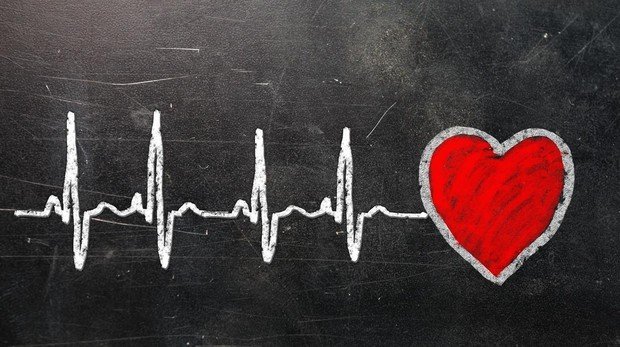

La frecuencia cardiaca es el número de veces que se contrae el corazón durante un
minuto (latidos por minuto). Para el correcto funcionamiento del organismo es
necesario que el corazón actúe bombeando la sangre hacia todos los órganos,
pero además lo debe hacer a una determinada presión (presión arterial)
y a una determinada frecuencia. Dada la importancia de este proceso,
es normal que el corazón necesite en cada latido un alto consumo de energía.